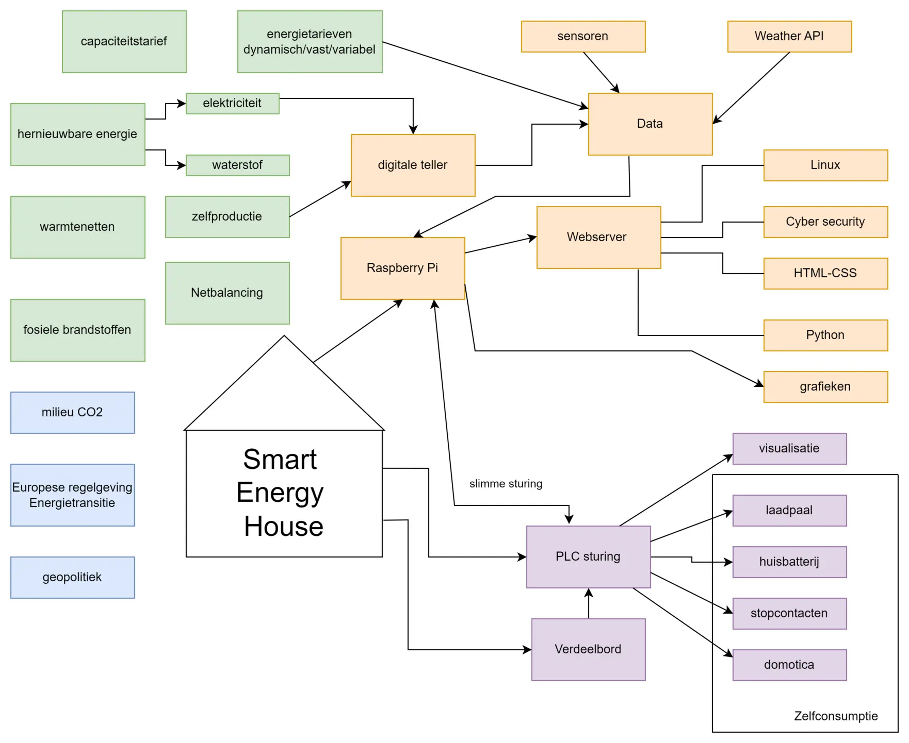
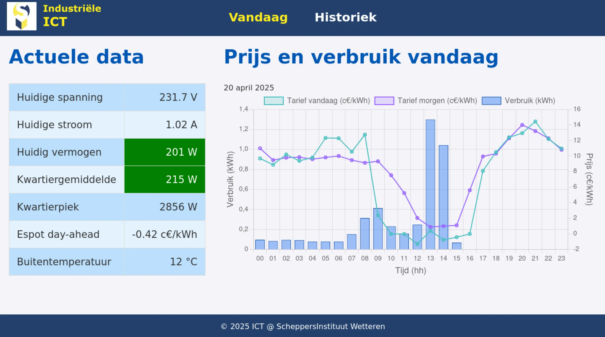
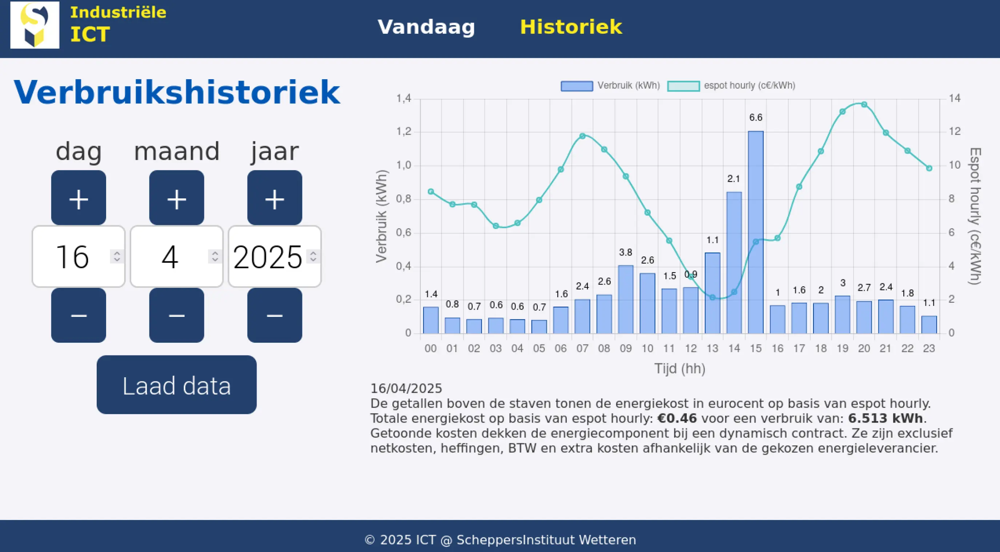
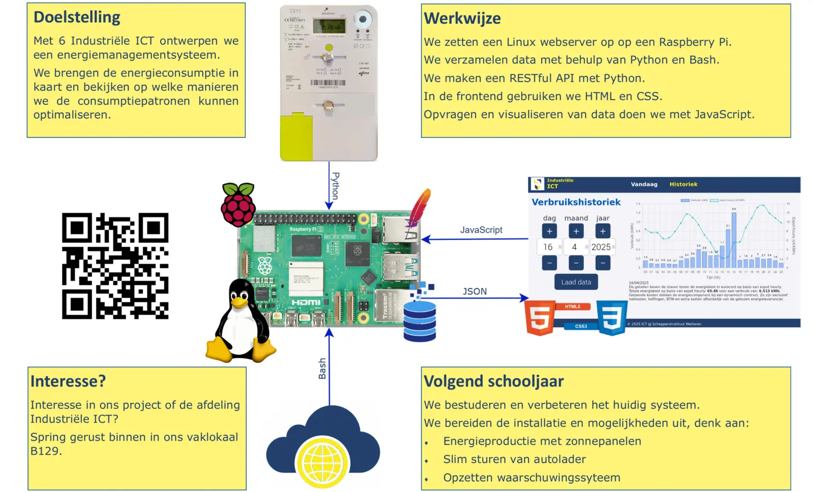

Onze eerste lichting 6ICT is dit jaar gestart met een ambitieus project: het ontwerpen van een eigen energiemanagementsysteem. Met dit EMS willen we op een slimme manier energieverbruik meten, analyseren en optimaliseren. We schetsen graag het verloop van dit leerrijke traject.
Om vat te krijgen op de complexe problematiek zijn we gestart met het maken van een conceptmap. Op basis daarvan hebben we het project opgesplitst in verschillende fases.

In de eerste fase hebben we scripts geschreven om data te verzamelen:
- We filteren gewenste data uit de seriële communicatie met de P1-poort van de digitale teller.
- We vragen weergegevens op via een online weer-API.
- De dynamische elektriciteitstarieven worden automatisch uit de inhoud van een online webpagina gehaald.
In de tweede fase hebben we systeemservices (systemd-services) en systeemtaken (cronjobs) aangemaakt die ervoor zorgen dat de scripts automatisch op de juiste momenten worden uitgevoerd. Zolang ons systeem aan staat, wordt de data dus automatisch verzameld.
In fase drie hebben we een Linux-webserver opgezet met een RESTful API.
Vervolgens ontwikkelden we een webbased dashboard gebruikmakende van HTML, CSS en JavaScript. De gebruiker kan in het dashboard een datum selecteren. Het dashboard neemt vervolgens contact op met de webserver, die de gevraagde data van die dag uit de databank haalt en doorstuurt. Het dashboard visualiseert deze gegevens ten slotte in een grafiek.


In mei 2025 installeerden we ons EMS-systeem in de Gloriëtte, een bijgebouw op het schooldomein. Op de opendeurdagen van onze school konden de bezoekers daar ons EMS-systeem in werking zien.
